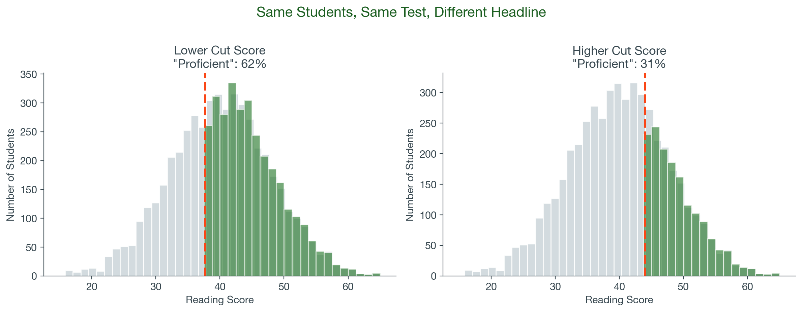
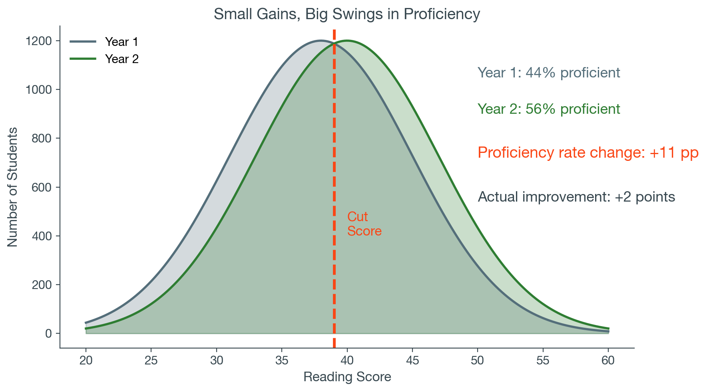
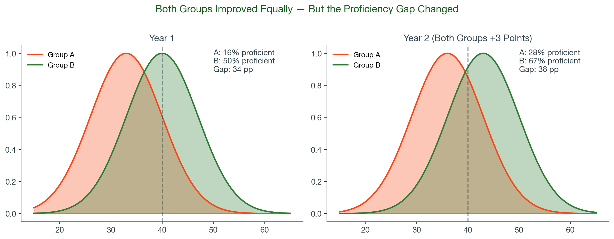
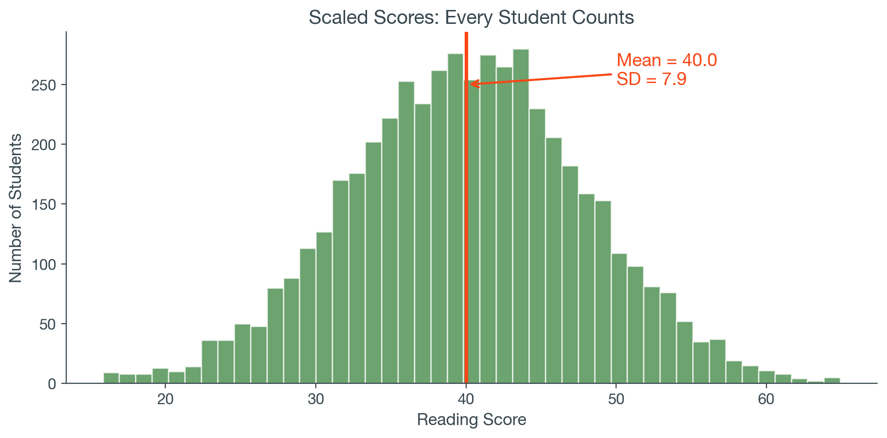
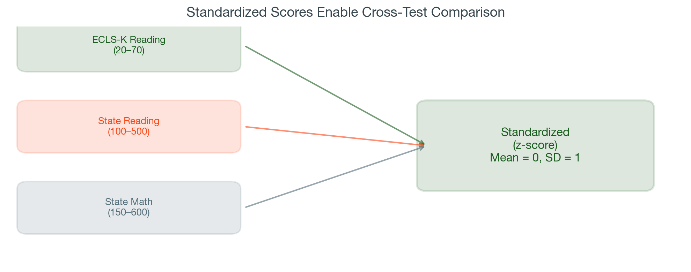
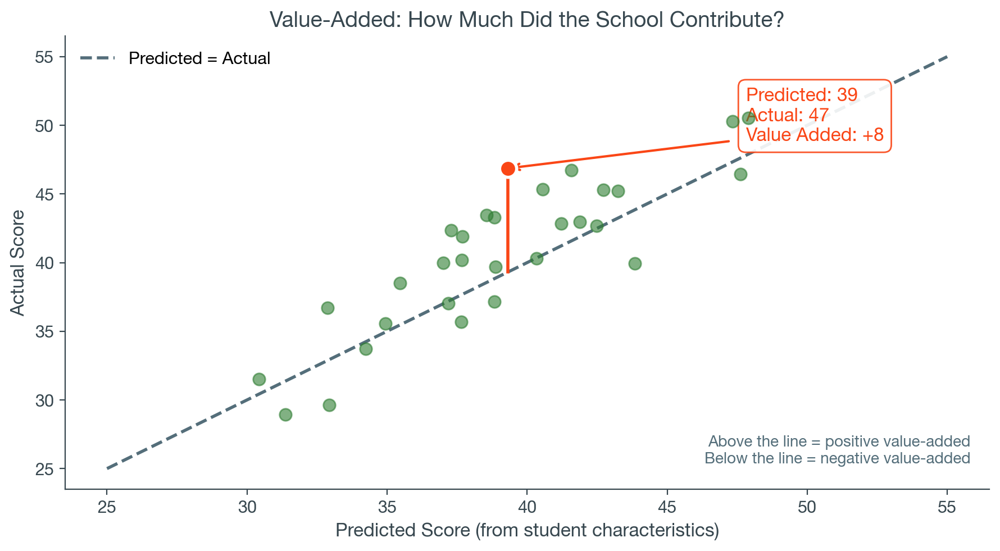
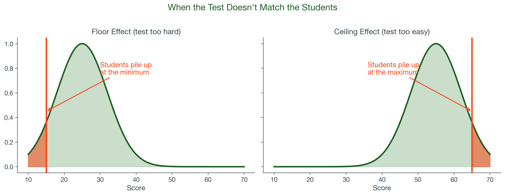
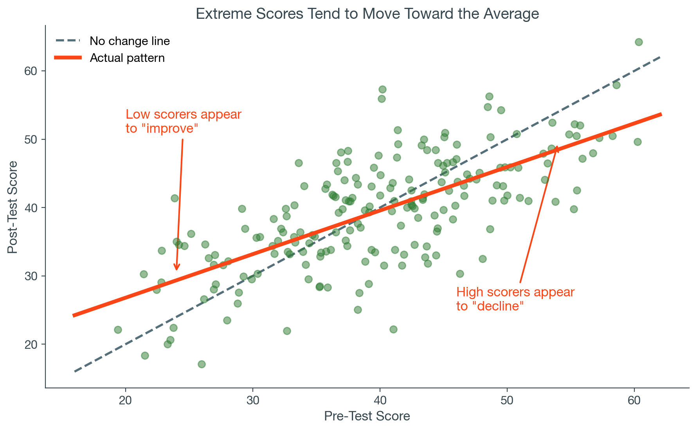

Enable accountability and evaluation (school performance, program effects)
Limitations
Capture only part of what schools do (not creativity, motivation, citizenship)
A snapshot, not a full picture (one test, one day, one domain)
High stakes distort behavior (teaching to the test, narrowed curriculum)
Inequality in testing conditions (resources, test prep access, bias)
Test scores are valuable. Understanding their limitations makes them more so.
Part 1
Proficiency Rates
Proficiency Rates
Proficiency rate: the percentage of students who score at or above a predetermined cut score on a standardized test. Example: “65% of 4th graders scored proficient or above in reading.”
1
Accountability — school grades, state report cards, federal reporting under ESSA
2
Identifying students — who needs intervention? Who’s on track? Who qualifies for services?
3
Comparing subgroups — achievement gaps by race, income, disability, English learner status
Simple and intuitive: but simple doesn’t mean accurate.
The Funhouse Mirror
Viewing school performance through proficiency rates is like looking in a funhouse mirror. The answers about growth and equity are “at best distorted and at worst just wrong.”
— Andrew Ho, Harvard Graduate School of Education
1
Arbitrary cut scores — the threshold is a political choice, not a scientific one
2
Distorted growth — small score changes create the illusion of meaningful gains
3
Misreading achievement gaps — gap trends depend on where groups sit relative to the threshold
Problem 1: Arbitrary Cut Scores

Same students, same test. The only thing that changed is where we drew the line.
On the recording’s Mississippi example, the verified figures are: the 2002 state test reported 84% of fourth graders proficient in reading, while NAEP reported 18% (1998) and 21% (2013). By 2015 the NAEP figure was 26%.
Problem 2: Distorted Growth

When students cluster near the threshold, small gains produce large proficiency swings. The reverse is also true.
Problem 3: Misreading Achievement Gaps

Both groups improved equally on the actual test. Proficiency rates tell a different story.
PlayPosit Question 1
A district reports that its math proficiency rate rose from 48% to 63% in two years, while a neighboring district’s rate stayed flat at 82%. A school board member concludes the first district is improving faster. What is the most likely problem with this conclusion?
The first district probably changed its cut score
Schools near 50% proficiency show larger swings from small score changes — the improvement may be exaggerated
The second district’s scores actually went down
Proficiency rates can’t be compared across districts
Part 2
Scaled and Standardized Scores
Scaled Scores: The Full Picture

Proficiency Rate
“62% met the standard” One number, information lost
Scaled Score
Mean = 40.0, SD = 7.9 Full distribution preserved
Also available
Sub-scores by content area and item-level data
Sub-scores (for example, vocabulary vs. comprehension) can pinpoint where students are struggling. This is what you’ve been using all semester: regress with a mean reading scale score as the outcome.
Standardized Scores: Apples to Apples

Recall: z = (score − mean) / SD Kraft (2020) benchmarks are in SD units: small < 0.05, medium 0.05–0.20, large > 0.20
Same Question, Different Score
Proficiency (LPM)
Scaled Score
Standardized Score
Program
0.08** (0.02)
3.2** (0.9)
0.18** (0.05)
SES
0.15*** (0.01)
4.8*** (0.3)
0.27*** (0.02)
R²
0.05
0.14
0.14
N
2,500
2,500
2,500
Illustrative values for a hypothetical reading intervention (simulated for teaching, as noted in the recording). Same program, same students, three different stories. Which you report depends on your audience: school board → proficiency, researchers → standardized, internal planning → scaled.
PlayPosit Question 2
A regression estimates that a tutoring program increases math achievement by 0.25 standard deviations. Using Kraft’s (2020) benchmarks, how would you describe this effect?
Very small — likely not meaningful
Small to medium — meaningful for a single program
Large — unusually effective
Can’t determine without knowing the raw score change
Note: the recording states the answer is B; the correct answer is C. Kraft’s benchmarks classify effects above 0.20 SD as large.
Part 3
Value-Added and Growth
What Is Value-Added?

This is regression. The residual — the gap between predicted and actual — is the value added.
VAM: The Promise and the Problems
The Promise
Fairer to high-poverty schools (adjusts for student characteristics)
Captures growth, not just levels
Identifies unusually effective schools and teachers
Uses the full score distribution
The Problems
Estimates are volatile (ratings swing year to year)
Results depend on model choices (which controls are included)
Small classes amplify noise
Score inflation (Koretz): “gains 3–6× larger than real learning improvements”
You don’t need to build a VAM. You need to know the limitations when someone else does.
The same regress command you’ve been running — one more variable on the right-hand side
Accounts for where each student started — coefficients now represent associations beyond baseline
R² jumps dramatically, because prior achievement is a very strong predictor
Adding a strong predictor reshapes what the other coefficients mean
If your data include a baseline score, seriously consider using it.
What Happens When You Add a Baseline Score
Model A: No Baseline
regress read_spring ses female poverty
SES 4.8*** (0.3)
Female 1.2* (0.5)
Poverty -3.1*** (0.6)
R² 0.17
N 2,500
Model B: With Baseline Score
regress read_spring ses female poverty read_fall
SES 1.9*** (0.2)
Female 0.8** (0.3)
Poverty -1.4*** (0.4)
Read (Fall) 0.73*** (0.01)
R² 0.62
N 2,500
R² jumps from .17 to .62
SES shrinks: 4.8 → 1.9
Illustrative values (simulated, as noted in the recording). * p<0.05 ** p<0.01 *** p<0.001
PlayPosit Question
The table on screen shows two models predicting spring reading scores. When the fall reading score is added, the SES coefficient falls from 4.8 to 1.9. What best explains the change?
Adding any variable to a regression mechanically shrinks the other coefficients
Part of what looked like an SES–achievement relationship reflects that higher-SES students already had higher fall scores — the baseline now accounts for that
SES is measured with more error in the second model
The rise in R² forces the other coefficients toward zero
Approach 2: Growth as the Outcome
Growth (gain score) = Spring Score − Fall Score Then: Growth = β₀ + β₁(SES) + β₂(Female) + ε
Advantages
Directly models who grew more
Intuitive for stakeholders
Easy to explain in a report
Tradeoffs
Growth scores are noisier
Regression to the mean: low scorers tend to “grow” more
This difference score is called a gain score. Both approaches are legitimate: researchers prefer controlling for baseline; gain scores are common in practice.
Comparing the Two Approaches
Control for Baseline
Growth as Outcome
What you model
Spring score, with fall score as covariate
Spring − Fall as the outcome
Interpretation
Association with achievement beyond baseline
Association with growth
Strengths
Higher precision (R² jumps), widely used in research
Intuitive, easy to explain to stakeholders
Limitations
Assumes baseline fully captures prior learning
Noisier, regression to the mean
When to use
When you want to isolate associations of predictors
When growth is the explicit question
Either way, it’s just regression. You already have the skills.
PlayPosit Question 3
A researcher adds students’ 3rd-grade math scores as a control variable to a regression predicting 4th-grade math scores. The R² increases from 0.20 to 0.58. What is the best interpretation?
The regression is now biased because you’re controlling for the outcome
Prior achievement is a very strong predictor of future achievement — the model now accounts for where students started
The 3rd-grade scores caused the 4th-grade scores
The model is overfitting the data
Part 4
Other Score Issues
Floor and Ceiling Effects

If a test is too easy or too hard for the population taking it, scores cluster at the boundary. Real differences are hidden, and growth cannot be accurately measured. Watch for this in district benchmark assessments and end-of-course exams.
Regression to the Mean

Why it matters
A low-performing school shows “improvement” after a new program is introduced.
Was it the program? Or were those extreme scores partly random, and due to bounce back?
Controlling for baseline achievement (Approach 1) helps: it accounts for where students started.
Every score has some randomness. Extreme scores tend to move toward the average on retest.
Campbell’s Law and Test Validity
“The more any quantitative social indicator is used for social decision-making, the more subject it will be to corruption pressures and the more apt it will be to distort and corrupt the social processes it is intended to monitor.”
— Donald Campbell (1979)
Validity
A test is valid when it measures what it claims to measure. The SAT is reliable — but it’s not a valid measure of cooking ability. When high stakes are attached, Campbell’s Law kicks in: scores become less valid as measures of actual learning.
Test Bias
Different from measurement error. A biased test is like a broken scale — it will never give the right answer. Modern tests work hard to eliminate bias, but it’s worth asking about for any assessment.
Koretz’s core argument: when test scores become high-stakes targets, the scores stop meaning what we think they mean.
Part 5
Using Test Scores as a Leader
What to Ask When Someone Hands You Test Score Data
1
What type of score is this? Proficiency rate, scaled score, standardized, or growth?
2
Where’s the cut score? Who set it? Could a different threshold tell a different story?
3
What’s being compared? Snapshot (levels) or change over time (growth)?
4
What’s controlled for? Raw comparisons ignore student demographics. Has anyone adjusted?
5
Who’s missing? Are students or schools excluded from the data? Why?
You don’t need to run the analysis. You need to ask the right questions.
Common Misinterpretations to Watch For
“Our proficiency rate went up 15 points — our teaching must be working.”
If students were near the threshold, the gain may be an artifact. If the cut score changed, it’s illusory.
“School A outperforms School B — it must be a better school.”
Without adjusting for demographics and prior achievement, you’re comparing inputs, not school quality.
“This teacher’s value-added score is low — they’re ineffective.”
VAM estimates are noisy and swing from year to year. One year of data is not enough.
“Test scores went up, so students learned more.”
Koretz: score inflation. Gains on high-stakes tests can be 3–6× larger than actual learning gains.
PlayPosit Reflection
Think about the ECLS-K reading score you’ve been using as the outcome variable in Applied Data Analysis Assignment 1. What type of test score is it — a proficiency measure, a scaled score, or a standardized score? Based on today’s lecture, is there anything about that score type you should acknowledge when interpreting your regression results?
Respond in 2–3 sentences.
Looking Ahead
Next module: Working with Survey Data — sampling, weighting, representativeness, and missing data
Applied Data Analysis Assignment 1 is due at the end of this module.
Research Critique 1 is also due at the end of this module: a short critique of a published study that uses test scores as its outcome. Directions and the article are in the Assignments tab.
The required reading, Ho’s critique of proficiency rates, is a five-minute read that pairs directly with Part 1 of this lecture.